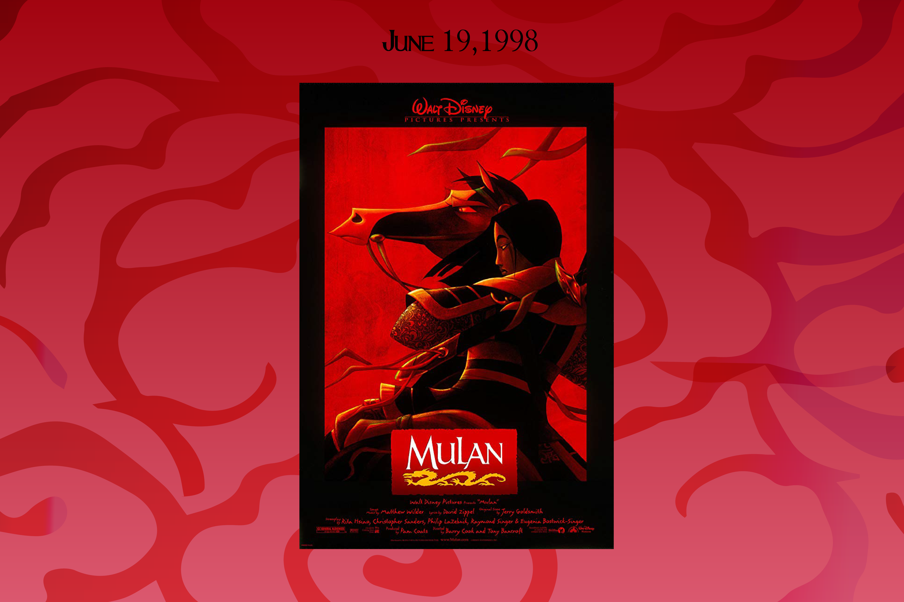

|
|
|
| MING NA WEN - Voice Actor Mulan (canon) She found a love for acting while appearing in a third grade Easter play, where she played a klutzy bunny. Her mother was not excited about her desire to pursue acting, She preferred that she go into medicine. Nonetheless, Ming-Na graduated from Carnegie Mellon University with a degree in theatre... See Full Bio |
LEA SALONGA - Singing Actor Mulan (canon) Lea Salonga began her singing career at the age of ten, when she recorded her first album, Small Voice.She also hosted her own musical TV show, "Love, Lea".She starred in "Miss Saigon" and was then offered the role of the singing voice of Jasmine in the Disney film Aladdin (1992)... See Full Bio |
| MARNI NIXON - Singing Actor Grandmother Fa "Loverly" soprano Marni Nixon has ensured herself a proper place in film history although most moviegoers would not recognize her if they passed her on the street. But if you heard her that might be a horse of a different color. Marni is one of those unsung heroes... See Full Bio |
JUNE FORAY Grandmother Fa She started in the voice field at the age of twelve, at a time when she was already doing old lady voices. She had the good fortune of having a speech teacher who also had a radio program in the Springfield area. This teacher became her mentor See Full Bio |
| DONNY OSMOND - Singing Actor Captain Li Shang Donald Clark "Donny" Osmond was born December 9, 1957 in Ogden, Utah, to Olive Osmond (née Davis) and George Osmond on . He was the seventh of eight brothers and has one sister. When Donny was young... See Full Bio |
B.D. WONG - Voice Actor Captain Li Shang BD Wong made his Broadway debut in "M. Butterfly." He is the only actor to be honored with the Tony Award, Drama Desk Award, Outer Critics Circle Award, Clarence Derwent Award, and Theater World Award for the same performance... See Full Bio |
| EDDIE MURPHY Mushu A bright kid growing up in the streets of New York, Murphy spent a great deal of time on impressions and comedy stand-up routines rather than academics. His sense of humor and wit made him a stand out amongst his classmates at Roosevelt Junior-Senior High School... See Full Bio |
SOON-TEK OH Fa Zhou Born in Mokpo, Korea (at the time under Imperial Japanese rule), actor Soon-Teck Oh (or Soon-Tek Oh or Soon-Taik Oh) came to the United States in 1959, studied at UCLA and trained at the Neighborhood Playhouse... See Full Bio |
| FREDA FOH SHEN Fa Li Freda Foh Shen was born on April 25, 1948 in Atlanta, Georgia, USA. She is an actress, known for Dude,Where's My Car? (2000), Mulan (1998) and Star Trek (2009)... See Full Bio |
JAMES HONG Chi-Fu (canon) Hong is one of the most prolific and well-recognized Asian-American character actors of movies and television. He currently lives in Los Angeles and is planning to produce and direct his own films... See Full Bio |
|
|
|
| Tony Bancroft Tony Bancroft has spent the past 16 years developing his skills as an Animator/Director with Walt Disney Feature Animation, Sony Imageworks, and currently with Toonacious Family Entertainment, his own animation studio. Tony was accepted into the exclusive, Disney- sponsored California Institute of the Arts (Cal-Arts) after graduating from high... See Full Bio |
Barry Cook Barry Cook was born and raised in Nashville, TN, USA. He began making films at the age of ten on the family super 8 camera. He won two prizes in the local PBS-sponsored Young Filmakers Festival with "The Vampire" and "Dr. Jekyll and Mr. Hyde" at the age of twelve. During summers, he and his brother would work at Opryland USA, drawing caricatures ... See Full Bio |